| ・ 第45回 可視化情報シンポジウム (H29.07.18-19) | |||
第45回 可視化情報シンポジウムに参加．いつもは全国講演ばかりですが，シンポは初参加です． 流体計測の研究で，M1のS田くんが「位相平均処理が周期流中のNACA0012翼周り3次元位相平均度場に与える影響」，M1のD口さんが 「円形関数を伴う depth-from-defocus に基づく粒子奥行き変位測定法」を発表しました．撮影はM1のS田くんです． |
|||
|
看板前 |
大きい看板見当たらず | ||
|
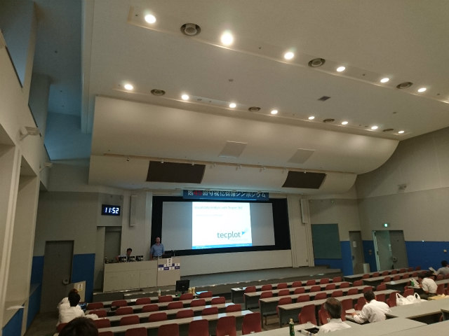
会場下見 |
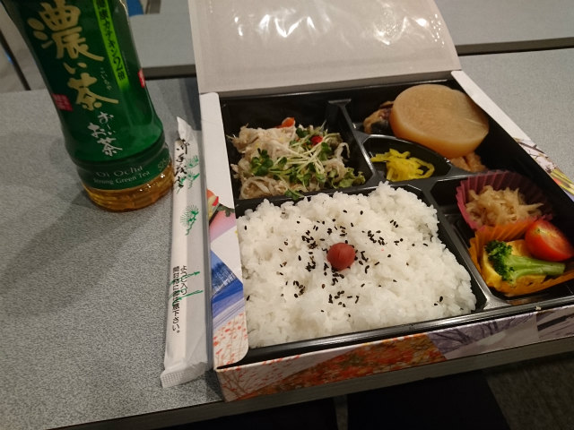
ランチョンセミナー参加 | ||
|
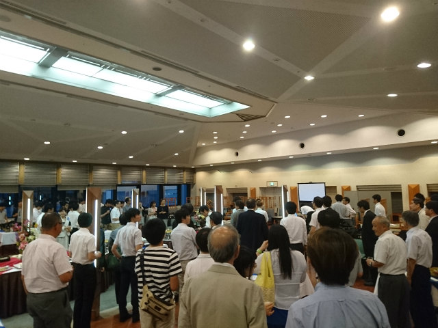
懇親会 |
お薦めだそうです | ||
|
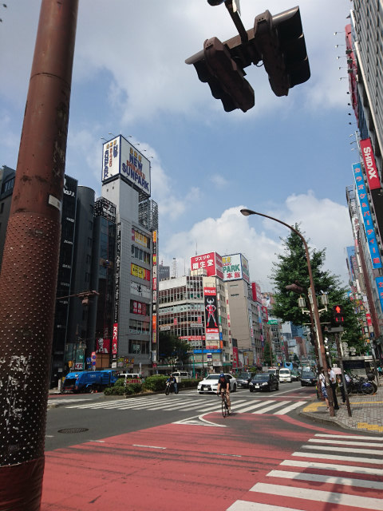
移動中 |
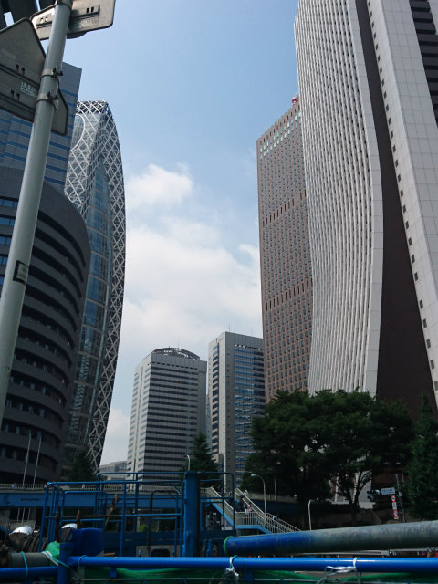
地下で迷子なので | ||
|
地上でなら |
なんとか到着 | ||
|
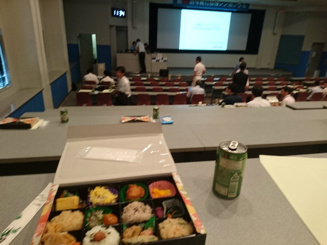
ランチョンセミナー |
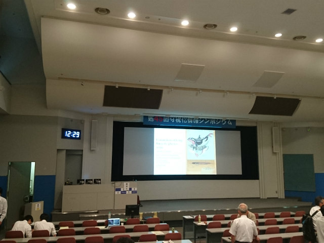
ぼちぼち | ||
|
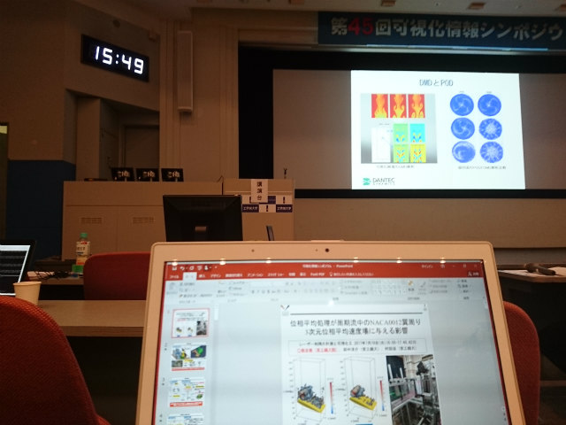
発表が近い |
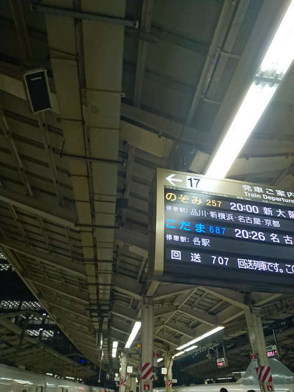
東京駅でロッカーを探す旅 | ||
|
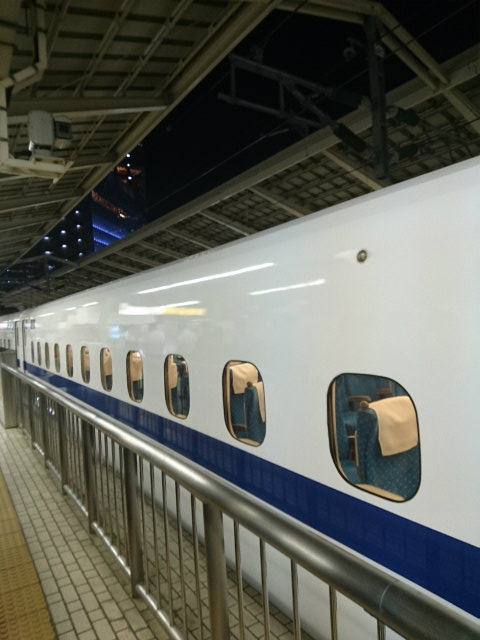
去年もあったよね |
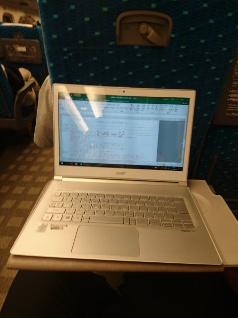
出張報告書は着く前に完成させるモノ | ||